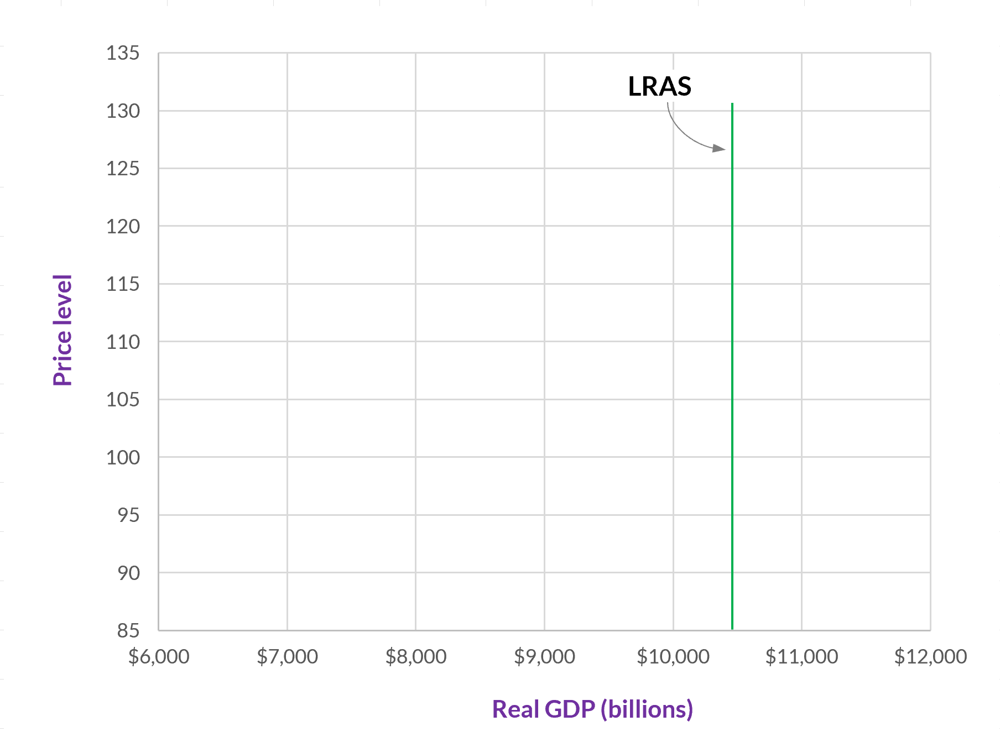
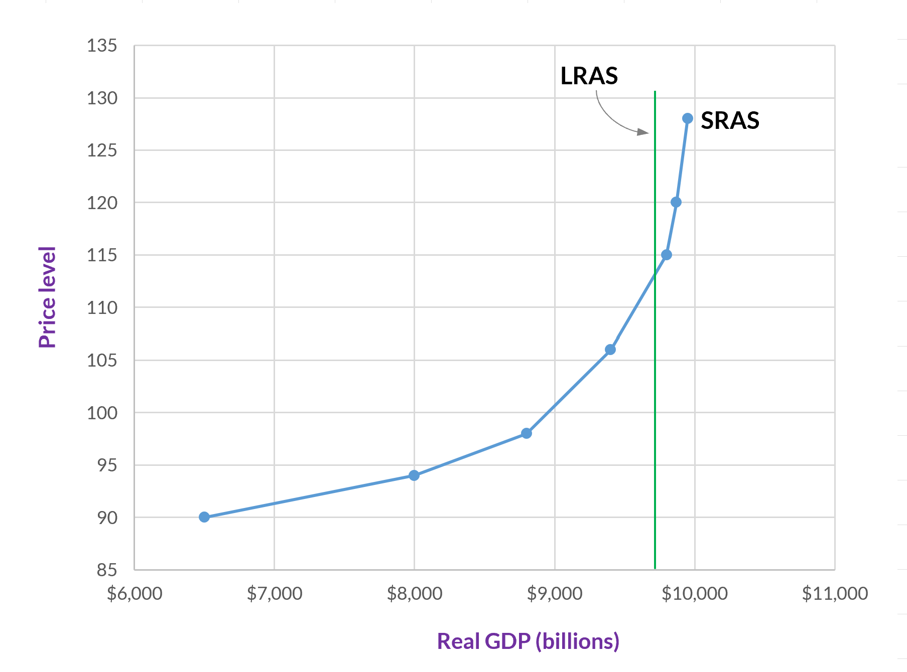
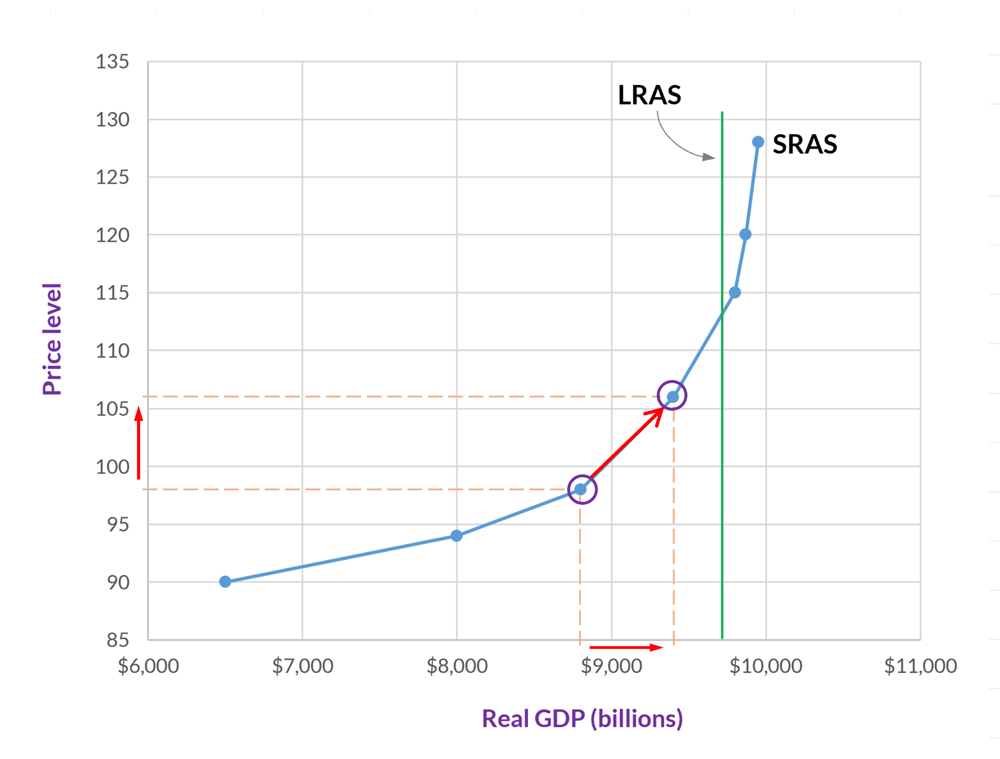
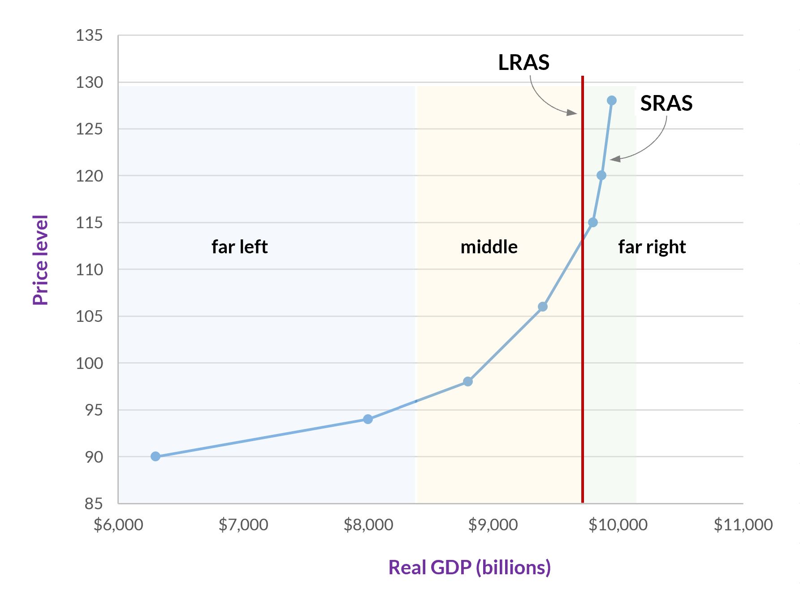

Aggregate supply
Aggregate supply is the total quantity of output that firms produce and sell. Just as with aggregate demand, aggregate supply is given in terms of total output (i.e., GDP), and each possible level of output corresponds to a price level. Hence, the aggregate supply curve—or curves as we will see in a moment—represents the total quantity of output (i.e., GDP) that firms will produce and sell at each price level.
There are actually two aggregate supply curves in this model, one for the short-term and one for the long-term. We won’t worry too much about where the line is between the short- and long-terms, but you can think of the short-term as up to three or four years and the long-term as the period beyond eight or ten years. (And so, yes, there is a period in between, but we won’t worry about it.)(1)
- Technically, in macroeconomics, the short run is the period during which wages and other prices are sticky, which is usually up to a few years. The long run is the period during which wages and prices adjust. So, in the long run, the unemployment rate equals the natural rate of unemployment and GDP equals potential GDP.
Terminology
Recall the distinction between demand and the quantity demanded and supply and the quantity supplied. Demand and supply are the curves (or a table listing the price-quantity pairs). The quantity demanded is a specific amount that consumers want, and the quantity supplied is a specific amount that firms produce.
We make similar distinctions with aggregate demand and aggregate supply (although what’s in the videos isn’t always as precise as it could be). Aggregate demand, long-run aggregate supply, and short-run aggregate supply refer to the curves. A specific amount of any one of these three is a level of GDP or output (which we can use interchangeably here).
Long-run aggregate supply
Over the long-run, aggregate supply equals potential GDP. Potential GDP is an idea that we have already encountered, although we called it the production possibilities frontier (and we thought about it in terms of only two goods).
Potential GDP: The amount of real GDP (i.e., output) an economy can produce by fully employing its existing levels of labor, physical capital, and technology, in the context of its existing market and legal institutions.
The graph in figure 1 shows real GDP (red) and real potential GDP (blue). As you can see, during every recession, potential GDP falls below actual GDP. That’s because the factories, equipment, workers, and everything else, which still exist, aren’t being used to their full potential.
You can also see in figure 1 that actual GDP sometimes gets a little bit above potential GDP. These are instances when the economy is “running hot.” Workers are working overtime, factories are adding extra shifts, and, perhaps, frictional or structural unemployment are lower than we would expect. Generally speaking, such periods are unlikely to last for very long.
In the graph in figure 1, potential GDP slopes upward in a smooth trajectory. That is, every year it is higher than it was the previous year. In our aggregate demand – aggregate supply model, however, we don’t have time as a variable. All that we have is the price level on the vertical axis and output (or GDP) on the horizontal axis.
Potential GDP isn’t affected by the price level, however. It is determined by all of the workers, factories, inputs, roads, technologies, and so forth that are available. The price level can be high or low, and these will all be the same. Hence, the LRAS curve is a vertical line. Any change to it, from, say, one year to the next, is represented by the line shifting (hopefully, to the right).

Short-run aggregate supply
Over the short-run, aggregate supply is affected by the price level, and it slopes upward.

Why does the SRAS curve have a positive slope?
You may recall that the market supply curve slopes upward—that is, it has a positive slope—because the production of each additional unit of a good has a higher opportunity cost than the previous unit.
The aggregate supply curve also slopes upward, but it can’t be for the same reason. When we are talking about aggregate (that is, total) supply, there aren’t any opportunity costs because there aren’t any second-best options. Everything is already included in the aggregate supply.
So, why does the short-run aggregate supply (SRAS) curve have a positive slope? We will consider three theories for why this is: the sticky wage theory, the sticky price theory, and the misperceptions theory. Before we begin, here are four points to keep in mind.
-
These theories seek to explain the effects of unexpected changes to the price level.
-
Each theory gives an account of why, when the price level decreases, output (that is, GDP) decreases, and why, when the price level increases, output (that is, GDP) increases.
-
The first two theories maintain that wages and prices are sticky downward and upward. Thus, in both directions, wages and some other prices are slow to adjust when the price level changes.
-
These are theories about why the short-run aggregate supply curve slopes upward, and so they all describe effects in the short-term. In the long-term (i.e., eventually), we expect that wages and prices will adjust, and, if the third theory is correct, producers and workers will figure out that all prices are changing.

The sticky-wage theory
The first theory is the sticky-wage theory. The central idea is that nominal wages are slow to adjust—upward and downward—to changes in the price level. Here are the two scenarios.
The price level falls, but employers are unable to (or just don’t) adjust wages downward. Goods and services are being sold for less, but firms still have high labor costs. Hence, they reduce the number of employees that they have (either by not hiring or by laying people off). This reduction in the number of employees reduces output.
The price level increases, but employers don’t increase wages right away. Goods and services are being sold for more, and firms have low labor costs. Hence, they can hire more employees or give their current employees more hours, which increases output.
The sticky-price theory
The second theory is the sticky-price theory. This theory is similar to the previous one, but, as its name suggests, its focus is on all prices, not just wages. In this theory, it is the prices for some goods and services that are slow to adjust when the price level changes.
One aspect of this theory that is a little odd is the idea that, while the price level (which is based on all prices) is rising or falling, some individual prices are not changing. Clearly it can’t be all or even most prices that aren’t changing, or the price level wouldn’t be changing.
Here is a definition that we need for this theory.
Menu costs: The costs of changing the price of a good or service. This includes the costs associated with changing price tags, websites, printed materials, and any other places where the (nominal) price has already been given. Menu costs also include the costs incurred by confusing or angering customers, and the cost of determining what the new price should be.
So, the picture that this theory gives us is one where enough firms are changing their prices so that the price level itself changes. But because of menu costs, some firms aren’t able to adjust their prices.
Here are the two scenarios:
The price level decreases, but, because of menu costs or existing contracts, some firms don’t adjust their prices downward. Consequently, because their prices are too high, their sales decline. These firms, then, reduce employment and output.
The price level increases, but, because of menu costs or existing contracts, some firms don’t raise their prices. Their sales increase, and so they increase investment and hire more workers, which increases output.
The misperceptions theory
Third is the misperceptions theory. This theory doesn’t include the idea that prices or wages are sticky. Instead, as the name suggests, there is a misperception about what is occurring when the price level changes. If a perfectly informed person understood that all prices (including wages) were changing, then this person would have no reason to change his or her behavior in response to a change to the price level.
But, according to this theory, when the price level changes, people misinterpret the change to the price that they watch the most closely. Producers and workers see that certain prices are changing, and they misinterpret these changes as being changes to either (1) only the goods or services that they produce or (2) only their own wages. Not realizing that all (or most) prices are rising or falling, they change their behavior. We will just focus on the producers’ misperception.
Let’s say that the price level is decreasing. A type of producer—say, wheat farmers—watches the price of wheat closely, and they see that this price has fallen. At the same time, they don’t immediately notice that the prices of the inputs that they use have also fallen. Believing that they still have high costs while they are getting a low price for their wheat, they reduce employment and other costs. Consequently, they produce less wheat (and the same happens for many other kinds of producers), and GDP falls.
When the price level is increasing, producers—in our example wheat farmers—see that the price at which they can sell wheat has increased. They don’t, however, immediately notice that the prices of their labor and other inputs have also increased. So, they produce more wheat (and the same happens for many other kinds of producers), and GDP increases.
Remember that these three theories seek to explain why the SRAS curve is positively sloped. As such, each explains why a change to the price level causes actual output to move to a different point on the SRAS curve (while the curve itself stays in the same place). Later, we will examine the factors, other than price level, that affect SRAS. These factors, since they are not price level changes, cause the SRAS curve to shift to the right or to the left.
The shape of the SRAS curve
Whereas the aggregate demand curve is believed to have a fairly steep slope throughout the entire curve (or at least, most of it) and the long-run aggregate supply curve is a vertical line, the slope of the short-run aggregate supply curve is different at different points.
The central factor here is where SRAS is relative to potential GDP (i.e., LRAS). We will break this into three categories: (1) far below potential GDP, (2) above potential GDP, and (3) in between these two extremes.

At the far left, the SRAS curve has a very minimal slope. (In the standard SRAS curve that we use today, it’s not flat, but at this extreme, it is nearly so.) Here we are well below potential GDP, and so output is very low. As a result, there is plenty of capacity to supply more goods and services, and a small increase in the price level will have a big effect on output supplied. (And similarly, a decrease in either will also have a big effect but in the opposite direction.)
At the far right, and to the right of LRAS, the SRAS is almost vertical. Here aggregate supply is above potential GDP, and so output cannot increase much more. At this part of the SRAS curve, even a large increase in the price level or AD will not have a big effect on output.
The slope of the middle part of the SRAS curve is between the two extremes. Here, changes to the price level or AD will increase output, although not as much as further to the left on the SRAS curve—but more than we get once we pass LRAS.